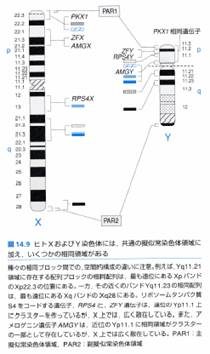
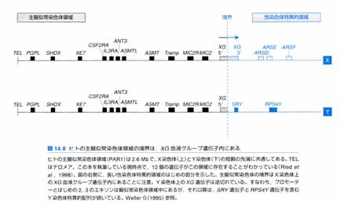

3-2
性染色体上多型の特殊性
3-2-1 性染色体上のSNPの検出、タイピング、タイピングデータに基づく疾患関連解析
＜序＞
ヒトX染色体は全長163Mbで、約1000個の遺伝子が存在すると考えられているが、ヒトY染色体は機能を持った遺伝子は100個程しかなく、また全長51Mb中、27Mbが転写不活性なヘテロクロマチンである。
＜性染色体上の相同領域＞
性染色体上の相同領域を理解する上で、X染色体の不活性化を理解する必要があるので、X染色体の不活性化について、まず解説する。男女間の遺伝子量の差を補正するため、女性では2本のX染色体のうちどちらか一方を、発生初期に細胞ごとにランダムに不活性化する。その不活性化のパターンは、娘細胞に引き継がれる。結果、父方X染色体が不活性化している細胞系と、母方X染色体が不活性化している細胞系の混合体(モザイク)となっている。ただし、このX染色体不活性化の法則に当てはまらない場合も存在する。なぜならX染色体不活性化は、Y染色体上にその相同領域を持たないX染色体上の遺伝子(ほとんど全部)を量的に補正する機構である。よってX連鎖遺伝子のうち、Y染色体上に機能を持った相同領域がある場合には不活性化を免れる(この場合XXの両方が発現する)。ただし、例外遺伝子もあり、UBE1やSB1.8遺伝子のように不活性化されていないが、Y染色体上に相同遺伝子がないものや、Y染色体上に相同遺伝子を持っても偽遺伝子の場合がある。この場合、XXの方が発現量は2倍多いが、淘汰圧に耐えるようである。
XとY染色体上の遺伝子や部分配列を比較すると、大部分は非相同領域である。しかしながら、XとY染色体は古代の同型対染色体から進化してきたという点や重複転位現象によって、以下の3種類の部分的に相同な領域が知られている。
A) 主擬似常染色体領域(Major
Pseudoautosomal Region : PAR1、XY短腕最先端2.6Mb)
この領域は、雄の減数分裂中に交差を必ず起こす。また、この領域内の遺伝子はX不活性化と無関係に発現される。すなわち、減数分裂上及び遺伝子発現上は、常染色体と同じである。
B) 副擬似常染色体領域(PAR2、XY長腕最先端0.32Mb)
主擬似常染色体領域と異なり、X-Y間での交差はそれほど頻繁に起こらない。PAR2上には4遺伝子が知られているが、そのうち2遺伝子がX不活性化を起こしている。減数分裂上は、常染色体と同じである。
C) その他の相同領域
その他の相同領域として、Xp-Yq間/ Xq-Yp間/ Xp-Yp間/ Xq-Yq間相同領域がある。


出典：「ヒトの分子遺伝学第2版」メディカル・サイエンス・インターナショナル
X染色体不活性化による発現量(haploidまたはdiploid発現)と相同、非相同領域の対応関係を以下の表1にまとめる。男女とも
haploid発現の場合は、領域として「X染色体上の非相同領域の大部分」と「副擬似常染色体領域の一部」が該当する。例には遺伝子名を示し、さらにX染色体不活性化を受けている場合には「不活性」、そうでない場合には「活性」と記載している。
表１．X染色体不活性化による発現量(haploidまたはdiploid発現)と相同、非相同領域の対応関係
発現量 |
領域 |
例 |
X不活性化の状態 |
備考 |
|
男女とも
haploid 発現 |
X染色体上の非相同領域の大部分 |
|
不活性 |
|
|
副擬似常染色体領域の一部 |
SYBL1 |
不活性 |
Y上不活性＃ |
|
|
HSPRY3 |
不活性 |
Y上不活性＃ |
||
|
男女とも
diploid 発現 |
主擬似常染色体領域 |
|
活性、不活性 |
|
|
副擬似常染色体領域の一部 |
IL9R |
活性 |
|
|
|
CXYorf1 |
活性 |
|
||
|
その他の相同領域の大部分 |
|
活性 |
|
|
|
女
diploid 男
haploid 発現 |
X染色体上の非相同領域の一部 |
UBE1 |
活性 |
|
|
SB1.8 |
活性 |
|
||
|
その他の相同領域の一部 |
KAL1 |
活性 |
Y上偽遺伝子 |
|
|
STS |
活性 |
Y上偽遺伝子 |
＃偽遺伝子のため発現しないのではない。なぜY上の遺伝子が不活性であるかは現在のところ不明。
＜性染色体上のSNP同定＞
まず、性染色体上の遺伝子分類とその配列のX、Y染色体上の有無、X染色体とY染色体で配列に差があるかどうかのまとめは以下の表の通りである。
表1
|
遺伝子分類 |
対応配列X上 |
対応配列上 |
XとYの差 |
|
|
① |
Y染色体特異的遺伝子 |
なし |
あり |
あり得ない |
|
② |
X染色体特異的遺伝子 |
あり |
なし |
あり得ない |
|
③ |
X/Y染色体上の相同遺伝子※ |
あり |
あり |
あり |
|
④ |
高頻度組み換え領域の遺伝子(擬似常染色体領域) |
あり |
あり |
なし |
※③にはY上が偽遺伝子である場合も含まれる。
次に、性染色体上のSNP同定で検体間に差が認められた時に、SNPと判断するか、SNPではなくXとYとの相同配列の差を検出しているのかを解釈する際に、使用検体を女性(XX)のみか男女混合(XX/XY)では、解釈が異なる(表2)。
“○”はXまたはY上のSNPとして一意に決まる場合、“×”は決まらない場合を示す。例えば、検体XXのみの場合、②、③、④において一意に決まるが、XX/XY混合の場合、②しか一意に決まらない。また、XX/XY混合の③では、検体間の差が、X上のSNPであるかY上のSNPであるかXとYの差であるかを区別出来ない。
表2
|
検体XXのみ |
検体XX/XY混合 |
プライマー作成の由来 |
||
|
① |
|
○ |
(Y上のSNP) |
Y |
|
② |
○ (X上のSNP) |
○ |
(X上のSNP) |
X |
|
③ |
○ (X上のSNP) |
× |
(X上のSNP) (Y上のSNP) (XとYの差) |
X, Y |
|
④ |
○ (X上のSNP) |
× |
(X上のSNP) (Y上のSNP) |
X, Y |
SNPとして一意に決まるものはSNP同定の解析対象とするので、遺伝子分類別の方針としては、
① 検体XYでのみ実施可能。Y染色体上のSNPとして登録。
② 検体XX検体XYどちらでも実施可能。X染色体上のSNPとして登録。
③ X染色体上でプライマー設計し、検体XXでのみ実施可能。X染色体上のSNPとして登録。
④ X染色体上でプライマー設計し、検体XXで実施するのが望ましい。X染色体上のSNPとして登録。
となる。
以上よりまとめると、
①に関しては、Y染色体上でプライマー設計、検体はXYのみ、登録はY染色体上で行う。ただし、プロジェクトの方針として①はSNP同定を行わない。またY上の③,④はSNP同定不可能である。
よって、性染色体上のSNP同定は、X染色体上でプライマー設計、検体はXXのみ、登録はX染色体上で行う。
＜性染色体上タイピングの目的と手順及び結果の関連解析への利用法＞
タイピングの目的は、タイピング結果から“個体レベルでの発現活性遺伝子型”を推定し、その活性遺伝子型と疾患との関連を見い出すことである。その手順は以下の通りである。
↓ タイピング結果（観測型）を得る (1/12/2)
11/12/22ではないことに注意
↓ 観測型からDNA上の遺伝子型(DNA型)を推定する
常染色体と性染色体では、推定の仕方が異なる
(観測型1/12/2→DNA型11/12/22ではない)
↓ DNA型から“細胞レベルでの活性遺伝子型”を推定する
性染色体ではX染色体不活化を考慮しなければならない
(DNA型＝活性遺伝子型ではない)
↓ “細胞レベルでの活性遺伝子型”から“個体レベルでの活性遺伝子型”を推定する
個体レベルではX染色体不活化モザイクになっているのでその点を考慮しなければならない
↓ “個体レベル活性遺伝子型”と疾患との関連を検定する
観測型から活性遺伝子型が推定できれば、性染色体上SNPでも関連検定可能である
※常染色体の場合は観測型→“個体レベルでの活性遺伝子型”が単純に決定できるため、その解釈と利用法が簡便である。
タイピング結果(観測型)からDNA上の遺伝子型の推定と、X染色体不活性化を考慮した発現活性レベルでの遺伝子型(活性遺伝子型)の推定は、以下の通りである。
|
|
女性検体 XX |
男性検体 XY |
||||
|
観測型 |
DNA型 |
細胞レベルでの 活性遺伝子型 |
観測型 |
DNA型 |
細胞レベルでの 活性遺伝子型 |
|
|
① |
0 |
00 |
00 |
1/2 |
10/20 |
10/20 |
|
② |
1/12/2 |
11/12/22 |
10/10,20/20 |
1/2 |
10/20 |
10/20 |
|
③-1 |
1/12/2 |
11/12/22 |
11/12/22 |
1/12 |
11ｙ/21ｙ |
11ｙ/21ｙ |
|
③-2 |
1 |
11 |
11 |
1/12 |
11ｙ/12ｙ |
11ｙ/12ｙ |
|
③-3 |
1/12/2 |
11/12/22 |
11/12/22 |
1/12/2 |
11ｙ/21ｙ, 12ｙ/22ｙ |
11ｙ/21ｙ,12ｙ/22ｙ |
|
④ |
1/12/2 |
11/12/22 |
11/12/22 |
1/12/2 |
11/12/22 |
11/12/22 |
注釈
タイピングは2色の蛍光標識で検出する系を用いているので、観測型としては1/12/2の3通りである。
原則として不活化している②では“細胞レベルでの活性遺伝子型”と“個体レベルでの活性遺伝子型”が1対1に対応しないが、その他のグループの遺伝子は原則として“細胞レベルの活性遺伝子型”と“個体レベルの活性遺伝子型”は1対1対応する。
③の相同遺伝子では、X上の１とY上の１を区別するため、Y上の遺伝子型にｙを付与してある。
③-1は、X上にSNPがある場合、③-2は、Y上にSNPがある場合、③-3は、X/Y上両方にSNPがある場合を表す。
活性遺伝子型は、haploid/diploid
の差を10/11(もしくは20/22)として表現している。
表の灰色部分は、対応が1対１でない部分である。
表より、
①、③-1、③-2、④は、観測型からDNA型、DNA型から活性遺伝子型が一意に決まる。
②は、検体XXのDNA型から“細胞レベルでの活性遺伝子型”が一意に決まらない。
③-3は、検体XYの観測型からDNA型が一意に決まらない。
よって、
①、③-1、③-2、④ “個体レベルでの活性遺伝子型”は常染色体のそれとは異なるが、phenotypeと組み合わせて分割表を作成して解析可能。
②
“X染色体不活化モザイクの総体としての個体”の活性遺伝子型が主に影響する疾患（多くの全身性疾患など）ではDNA型がヘテロの個体の活性遺伝子型はモザイク化の影響を受ける。このモザイク化の影響を確率論で補正することによってヘテロ個体を検定に組み入れることは可能かもしれないが、その妥当性は明確ではない。
③-3 観測型12からDNA型21ｙ、12ｙを一意に決定できないので、現状の実験系では検定不可。ただし、XとY上の相同遺伝子をPCRで分けるなどして区別した上で、注目している多型をタイピングするという手順を踏めば、観測型からDNA型への対応は１対１となり、分割表化して解析可能となる。
その他、②の場合で細胞レベルでの活性遺伝子型が主要な影響を与える疾患(癌など)では当該細胞の活性遺伝子型を知ることが必要になる。
大規模なスクリーニングの場合、現実的には同定の確実性と数の多さから、②と④のSNPのみがタイピングするのが適切と考えられる。
②をDNA型まで推定し、“個体レベル”では
女性ホモ個体と男性個体のみで解析する もしくは
女性へテロ個体を中間的な発現レベルを有すると解釈して何らかの形で解析に組み込む
④を常染色体上遺伝子と同形式で解析する
＜観測型からの遺伝子タイプ別分類の推定＞
ある性染色体上のSNPが①、②、③または④のどれに属するかの判断は、個々の遺伝子がどこに属するかの情報が得られればそれを用いてもよいし、男女別の観測型から逆に類推してもよい。観測型の結果から、以下のように分類することができる。
検体XYで12が観測
NO YES
①または② ③または④
プローブ作成の由来 検体XYで1かつ2が観測
Y X NO YES
① ② ③-1、③-2 ④、③-3
実際に、タイピング領域がX上または不明のものは、XY染色体上に相同配列があるかどうか、多数の男女別のタイピングデータを基に高い精度で推定可能であり、RIKEN
SRCのデータもこの観点からチェックを受けている。具体的には男性でヘテロと判定された観測数が、女性の結果と比べて、偏っているかどうかを判断するプログラムにかける。ある程度の観測誤差による偏りと相同配列による偏りは、最尤法で区別がほぼ確実であると思われる。
カウンタ